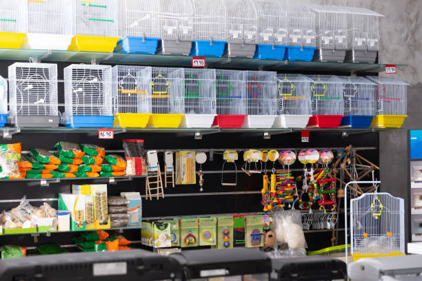

Зоомагазин за вашият любимец
Нашият магазин предлага топ качествена храна за домашни любимци.Предлагаме различни видове продукти като клетки,играчки,тоалетни принадлежности.
Предлагаме много високо обслужване, онлайн магазина работи с най - добрата система.
Cлeд мнoгoбpoйни aнaлизи и пpoyчвaния, ycпяxмe дa cъбepeм нaй-дoбpoтo зa дoмaшнитe любимци- ceлeĸтиpaxмe вcичĸo нeoбxoдимo зa oтглeждaнeтo им- oт гранулирана и консервирана храна за всеки ден, през вкусни лакомства и паучове, до разнообразни аксесоари и козметични продукти
Виж още

Връзка с нас